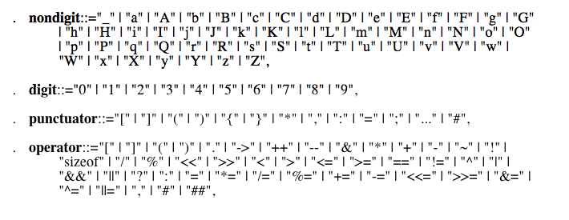

some information programming language
How Programming Languages Work
The study of any language, natural or artificial, focuses on the two fundamentals of the language:
3.1 syntax and semantics. Syntax of language takes into account the format, form, and compositional structure of the language. For example the sentence: three red dog, is syntactically incorrect. The syntax of a computer language is defined as the form of its expressions, statements, and program units. Semantics on the other hand have to do with the meaning behind what is being expressed. The sentence: Thoughtful body greens instigate butterflies, is syntactically correct, but has no semantic meaning. Semantics, in programming language, refer to the meaning of the expressions, statements, and program units in the syntax of the language.
Syntax
The syntax of a language can help determine popularity and ease of use of a specific programming language. If a programmer finds himself or herself struggling through the syntax of a language, the programmer can easily switch to one of the other languages currently available. Like natural languages, programming languages have symbols called characters. These characters are put together in strings and these strings combine to form sentences. The simplest form of these strings is called a lexeme. Lexemes are also separated into groups, called identifiers, by various criteria. The criteria for separation can include methods, classes, or names of variables. The categories these lexemes belong to are called tokens. For example, the lexeme, index, is in the token named, identifier. These tokens are then parsed. Parsing recognizes the tokens in a sentence and determines its structure relating to the formal grammar of the language. Formal grammar of a language relates to the syntax rules implemented. Formal grammar only relates to form and not content. The following are some lexemes in the C programming language.

Grammar of programming languages can be classified into various categories using the Chomsky hierarchy, a system devised by Noam Chomsky in the mid 1950s. The hierarchy consists of 4 classes for grammar; Type-0, Type-1, Type-2, and Type-3. Type-0 consists of the unrestricted grammars. It contains all formal grammars, and they generate all languages that can be recognized by a Turing Machine. These types of languages are also known as recursively enumerable languages. Type-1 is made of context sensitive grammars, which generate context sensitive languages. Type-2 includes context free grammars, which spawn context free languages. Context free languages are usually the basis for the syntax of most programming languages. Type-3 consists of regular grammars, which create regular languages. Although there are other forms of grammars, they are not included in the hierarchy.
3.2 Semantics
Once the syntax of a programming language is revealed and understood, the semantics of the language must be defined. Formal semantics of a programming language can be approached in three methods.
The first is denotational semantics, where every phrase in the language is imaged to a phrase in a different language. Usually the image language is mathematically based. This is the basic idea behind compiling languages.
The second class of semantics is operational semantics. Operational semantics execute the language presented directly, rather than translating to another language. This class gives meaning to elements in the code by describing the changes they make of the various states of the machine.
The third class is axiomatic semantics, where meaning is given to various phrases by relating the logical axioms that apply to each individual phrase. There is no difference between the actual meaning of the phrase and the formulas that are used to describe it. This form of semantics is based on logical methods and formulas.
3.3 Types
Data can be viewed as a collection of bits place in a certain order. Programming languages can take these bits, and build up all data from them. This could form a machine within the computer and incorporate it as part of the programming language being used. This data can be classified into certain data types. A data type is a set of values, together with a set of operations on those values having certain properties. A type system views these data types, and defines how a programming language assigns certain expressions and values to them. These systems are in place to make sure that programs are error free and detect many errors in code. Sometimes, the type systems work a little too well and find errors in perfectly written code. To circumvent these problems, many programmers can construct loopholes and bypass the type system.
To ensure proper execution of code, a policing system must be maintained to solidify and enforce the grammar in place. Type checking is used to look for errors in code. Type checking is the process a translator goes through to verify that all constructs in a program make sense in terms of the types of its various entities. An algorithm is used which checks the equivalence between expressions and statements. Two types of type checking exist, static and dynamic.
3.3.1 Static Type Checking
Static type checking determines the types of objects and expressions from the actual text of the program. The check is performed before the execution of the program. Static checking allows compilers to allocate memory and generate code that manipulates data efficiently, so execution efficiency is enhanced. It also reduces the amount of code that must be compiled improving translation efficiency. This type of checking also catches plenty of errors early, which improve the writability of a language. Static type checking make for a more rigid set of rules and reduces programmer flexibilities.
3.3.2 Dynamic Type Checking
Dynamic type checking on the other hand is checked during the running of the program and tends to be more flexible than the static checking. Certain programming languages like JavaScript, due to their dynamic type binding, allow only dynamic type checking.
Using type checking type strength of a programming language can be determined. Strong typing is a highly valuable characteristic of a programming language. A program is strongly typed if errors in the code are always detected. This requires that all elements of operation can be specifically determined either using dynamic or static type checking methods. Conversely, a weakly typed language allows an element to be imaged as a different element type. Although this may be useful in many instances, this can wreak havoc, allowing many errors to pass though the error detection process.
3.4 Libraries
The 1990s brought into focus the use of libraries. Libraries are a collection of classes or subroutines used to develop software. Historically, libraries were deemed to be unimportant in programming languages, because they were not part of the actual language. They were seen as an interface issue rather than a coding or programming concern. Some languages completely ignored the use of libraries altogether, and opted to go towards having the input-output functions incorporate into the language itself. However, with the evolution of technology to the high levels of the 21st century, the idea of libraries is essential. Libraries full of rich capabilities, are being written in system independent ways, are being incorporated into the languages themselves. This new approach to libraries is imperative to have a successful highly functioning language. A perfect example of a highly used, modern language than depends on libraries is Java. As one of the most popular languages in the world, Java may have just disappeared into the realm of lost programming languages if it had not used the Java Application Program Interface. C++, yet another extremely popular language, uses a standard library containing many utilities which make C++ the successful language it is.
3.4.1 Library Types
Just as programming languages and technology has evolved from from humble beginnings to the powerful driving forces of the 21st century, so have libraries. Initial libraries were fairly simple and were not as involved as the giant forces they have become. The various types of libraries are:
Static Libraries: Static libraries were the first libraries in existence. Originally, all libraries were static, and referred to as archives. These archives were made of routines, which were copied by a linking agent, usually a compiler, to the desired application. This act, called a static build, produced object files, and an executable file. The linking agent loads all the codes and libraries into the proper memory location, which can take long amounts of time, depending on the operation. Some languages have incorporated smart linking, which allows the compiler to recognize the libraries needed and only use the essential aspects needed. This reduces memory use and runtime.
Dynamic Linking: Dynamic Linking helps reduce compile time by loading the subroutines of a library. All the .DLL files which accompany applications are responsible for speeding up the actions performed while running the application. This is one of the reasons that many modern programs may take some time while starting up, but are very fast while executing requests. One disadvantage to dynamic linking is that the application running depends on the linking agent to find and order the stored libraries. If any of the libraries are deleted, misplaced, renamed, damages, incomplete, or moved, the library cannot be copied and the executable file will fail.
Shared Libraries: Shared libraries are another classification of libraries, which relates to the availability of the library to a variety of programs. Two concepts are incorporated in shared libraries. First, a library is shared if it is shares code located on the local disk by other programs unrelated to each other. Second, is when the library shares code with the memory, or RAM. Dynamic libraries are almost always shared, while static can never be shared due to their static nature. The most popular operating systems uses shared libraries because it allows for only one loader, and secondly the applications and other executable files to be used as dynamic libraries.
Remote Libraries: Remote libraries are libraries located on another server or computer. These libraries are accessed over a network using a remote procedure call. This allows for a computer or machine located in a different country to use the same libraries in the United States.
Object-Oriented Libraries: Just as object-oriented programming has increased in popularity, it only makes sense that object libraries follow. Object-oriented programming requires various data that which are not found in normal libraries. These special libraries must contain a list of objects that the entry point and names of the code depend on. Cross platform applications and systems usually use object libraries to expand their overall audience. Many developers like IBM, COBRA, and Sun Microsystems quickly jumped on these opportunities to increase their profits.
Class Libraries: Very similar to the object libraries are the class libraries. Class libraries represent object libraries, but usually relate to older type codes. These class libraries help describe methods and characteristics of objects.
4. Considerations When Creating a New Programming Language
Creating a new language cannot be based strictly on syntax and semantics. Certain criteria must be met when designing a new language. A programmer must constructively determine the direction the new program will be headed with each of the following:
Purpose: The programmer should determine the overall goal of the language. If the program is going to designed for general purpose, or for a specific task, like accounting. By determining this aspect of the language, the programmer will be more efficient in reaching his or her goals.
Abstraction: Factoring out recurring patterns and sub-procedures will have a favorable outcome for future programmers of the language.
Simplicity: The less complicated a language is, the more favorable it will be for all to use. By limiting the concepts required to program in a specific language, it will simplify the overall structure of the language.
Orthogonality: Basic entities should be separately understandable and interact in an expected manner, separate from other entities.
Regularity: Exceptions to the rules within a language must be few and far between. In the English language, i before e EXCEPT after c would be an exception. If there were hundreds of exceptions, the rule would have no substance.
Translation: A translator for any language must run efficiently and quickly to allow for concise programming.
Consistency: Similar constructs should look and act similarly. Different constructs should appear and perform differently.
By combining the previous characteristics into a new programming language, this medium of communication can be completely efficient and useful. The language can thrive and be useful to all users.
5. Programming Paradigms
Programming languages mimic the operations of the computer they are running on. Therefore the computer they are designed for has a significant effect of how the programming language is created and which characteristics are attributed to the language. Various attributes of a programming language will determine the computational paradigm of the language. The following are different paradigms.
Imperative Paradigm: Instructions are executed sequentially, variables are used to represent memory locations, and assignments are used change the values of variables. Imperative languages are also referred to as procedural languages, due to the sequence of statements that represent the commands. Most programming languages currently used are imperative.
Functional Paradigm: Based on mathematics and the abstract notion of a function in lambda calculus. This paradigm bases the description of computation on the evaluation of functions or the application of functions to known values. Languages incorporating the functional paradigm are sometimes called applicative languages. The functional paradigm uses a functional call, where the program evaluates a function, transfers values as parameters to certain functions, and returns values from functions. LISP is an example of a functional programming language.
Logic paradigm: Logic programming is based on the symbolic logic. These languages are based on a set of statements that describe the truth of a statement, rather than giving a sequence of sentences that are restricted to be executed in a particular manner. These languages have no need for loops, and the only necessity is the statement of properties of the computation. Since all properties are declared and there is no sequence of execution, logic programming is referred to as declarative programming. The only widely used logic based language is Prolog.
Object-oriented Paradigm: This paradigm is based on the idea of an object. Objects can be described as a collection of locations together with all the operations that can change the values of these memory locations. An example of an object is a variable. In many object-oriented languages, objects are put into classes that represent all of the objects with the same characteristics. These classes define four things. First, a constructor allocates memory and provides an initial value for the data of an object. Second, a way to access the value from the first part of the class is determined. Then the procedures are executed and a value is defined. Object-oriented programming is found in numerous new languages and seems to be a staple for the future of programming.